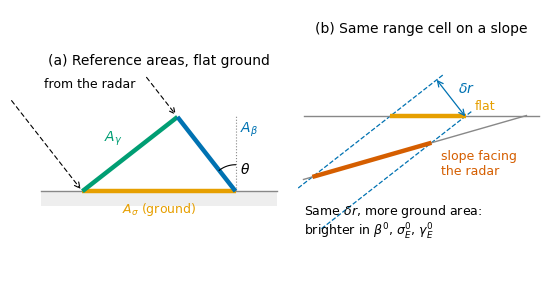
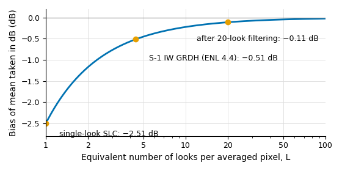

| SAR Concepts: Radiometric Quantities and Calibration | |
Calibration turns the digital numbers of a SAR product into backscatter coefficients: β0, σ0 and γ0. They describe the same echo divided by different reference areas. Picking the right one, and keeping it in linear units until the end, decides whether your values can be compared across dates, incidence angles and terrain.
A detected or complex pixel holds a digital number (DN). Its squared magnitude |DN|2 is proportional to the received power, scaled by processor gains. Calibration removes those gains. For Sentinel-1, the product carries look-up tables (LUTs) of calibration constants A along range and azimuth, and
σ0 = |DN|2 / Aσ2
with separate tables Aβ and Aγ for the other two coefficients. Every backscatter coefficient is a radar cross-section per unit reference area, so it is dimensionless (m2/m2).
The radar resolves a cell of fixed extent δr along the line of sight. The three coefficients divide its echo by three different areas (Figure 1a):
On a flat ellipsoid, with θE the ellipsoid incidence angle:
σ0E = β0 · sin θE
γ0E = σ0E / cos θE = β0 · tan θE
The subscript E marks values that assume flat terrain. At θE = 35°, γ0E is 0.87 dB higher than σ0E. Many vegetated surfaces change less across the swath in γ0 than in σ0, which is one reason γ0 is preferred for land.

Figure 1. (a) Cross-section of one range cell on flat ground: Aβ along the line of sight, Aσ on the ground, Aγ perpendicular to the line of sight. (b) The same range cell δr on a slope facing the radar covers more ground and returns more power.
Ellipsoid-based values assume flat ground. On real terrain the area that falls into one range cell depends on the local slope (Figure 1b). Slopes facing the radar collect echoes from a larger area and look bright; slopes facing away look dark. This brightness is geometry, not a property of the surface.
Small (2011) removes it by measuring the illuminated area directly. A DEM is projected into radar geometry, and the area of every DEM facet that maps into a pixel, projected perpendicular to the line of sight, is summed into Aγ,T. Then
γ0T = β0 · Aβ / Aγ,T
Summing the area handles foreshortened and layover pixels, which receive several facets; a single local incidence angle cannot. γ0T keeps what the surface does (moisture, roughness, vegetation) plus any DEM errors. Layover and shadow stay unreliable; see SAR geometry.
The receiver adds noise power to every pixel: the measured power is signal plus noise. The noise-equivalent sigma zero (NESZ) is the σ0 at which the signal power equals the noise power. Sentinel-1 is specified at −22 dB or better. The noise level varies along range with the antenna pattern, so uncorrected images show stripes at sub-swath boundaries. Noise matters for dark targets: calm water, smooth surfaces, and cross-polarised (VH, HV) channels, which are often only a few dB above the noise floor.
Thermal noise removal subtracts the annotated noise power from the intensity. Over dark areas the result can be negative; it is either clipped to a small positive floor, or left negative when the data will be averaged so the mean stays unbiased. The subtraction works on power, so it destroys the phase of complex data.
xdB = 10 · log10(x)
Speckle is multiplicative, and the average of logarithms is not the logarithm of the average. Averaging single-look intensities in dB underestimates the mean by 2.51 dB; at the equivalent number of looks of a Sentinel-1 IW GRDH product (4.4) the bias is still 0.51 dB (Figure 2). Taking more pixels does not reduce it. Calibrate, filter, multilook, terrain-flatten, resample and average in linear units. Convert to dB only for display, for thresholds you define in dB, and for statistics that assume log-transformed data. A ratio of two linear images is a difference in dB.

Figure 2. Bias of a mean taken in dB, relative to the true mean intensity, for fully developed speckle with L looks per pixel: (10 / ln 10)(ψ(L) − ln L), where ψ is the digamma function.
The ranges below are indicative, for orientation only (σ0, incidence about 30° to 45°). Actual values depend on incidence angle, moisture, roughness, wind, season and polarisation.
| Surface | σ0 VV (dB) | σ0 VH (dB) | Main mechanism |
|---|---|---|---|
| Calm open water | below −20 | below −25, often at the noise floor | mirror reflection away from the sensor |
| Wind-roughened water | −15 to −5 | below −22 | Bragg scattering; rises with wind speed |
| Bare soil | −20 to −8 | −28 to −16 | surface scattering; rises with moisture and roughness |
| Crops and grassland | −15 to −7 | −22 to −14 | volume and surface; changes through the season |
| Forest | −9 to −6 | −15 to −11 | volume scattering in the canopy |
| Urban | −5 to +5, point targets above +10 | −12 to −2 | double bounce between walls and ground |
Recommended chain, Sentinel-1 GRD to γ0T:
Apply-Orbit-File).Remove-GRD-Border-Noise). Apply it first, before Thermal Noise Removal and
Calibration: after noise removal, dark surfaces at the image edge are more easily mistaken for border noise.
Products from IPF 2.90 on are already masked and pass through unchanged.ThermalNoiseRemoval).Calibration) with Output beta0 band selected and Scale in dB off.Terrain-Flattening).Terrain-Correction).Speckle filtering, if wanted, goes on the linear β0 or γ0T (see Speckle). For Sentinel-1 TOPS SLC, calibrate before TOPS Deburst.
Sigma0_<pol> by default, plus Gamma0_<pol> and
Beta0_<pol> on request, in linear intensity. Scale in dB appends _dB.
Create gamma0 virtual band adds a virtual Gamma0_<pol> computed as Sigma0 divided by the
cosine of the incident_angle tie-point grid: the ellipsoid γ0E, not a
terrain-flattened value.Intensity_<pol> for uncalibrated input, or keeps the
Sigma0/Beta0/Gamma0 name for calibrated detected input. Output Noise adds the noise level in dB as
NEP_<pol> (uncalibrated) or NESZ_<pol> (for σ0).
Clip Negative Values is on by default (floor 10−5).Beta0 (or C2, C3, T3 matrix bands).
Uncalibrated input is calibrated to β0 automatically; a calibrated product without
Beta0 bands fails with "TerrainFlattening requires beta0 or T3, C3, C2 as input". The output
γ0T band is named Gamma0_<pol>, the same name Calibration uses for
the ellipsoid value. Output Terrain Flattened Sigma0 adds Sigma0_<pol>. The default DEM is
Copernicus 30m Global DEM.Beta0 bands.Beta0_VV_dB as linear.Gamma0 band from Calibration with one from Terrain Flattening. Same name, different
quantity; check the processing history in the metadata.Workflows: GRD to Terrain-Flattened Backscatter.